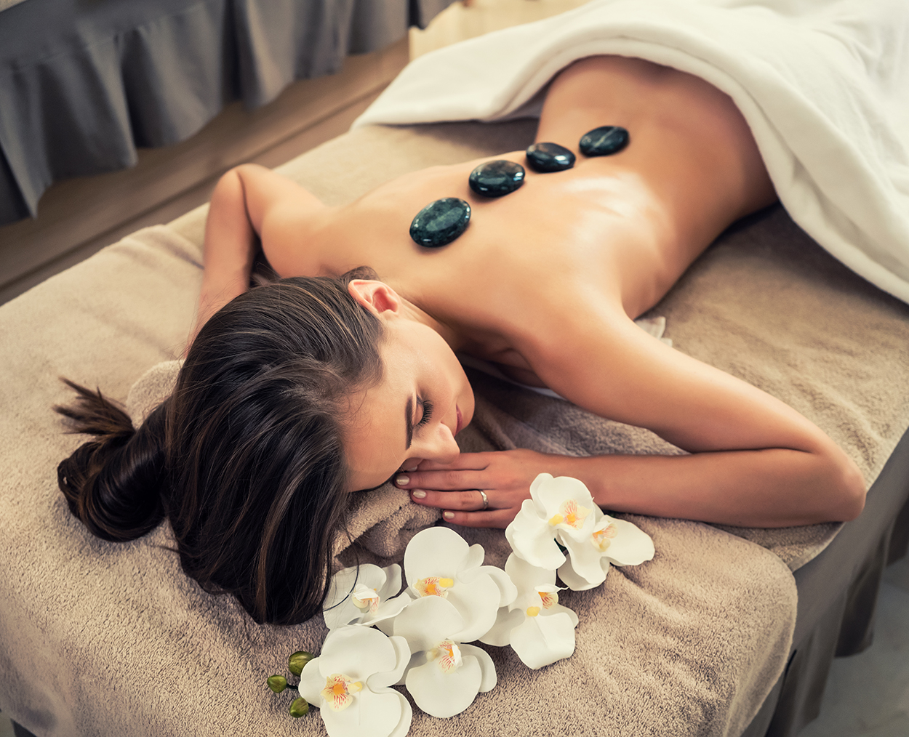
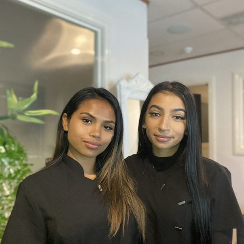

Treat yourself with the ultimate body massage experience to renew your body, mind and spirit.


Who We Are
A team of fully qualified and experienced massage therapists to help you feel relaxed, refreshed and rejuvenated.
Led by Sari Fyffe whose heritage and obsession with holistic health inspired her to create Cantik massage to invite others to experience the traditional benefits of Balinese massage and have you feeling refreshed to face the day.